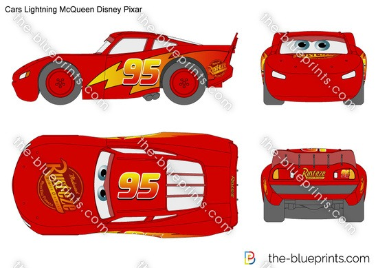
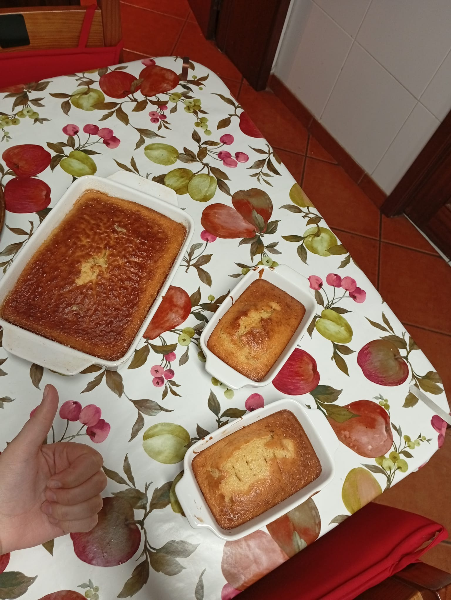
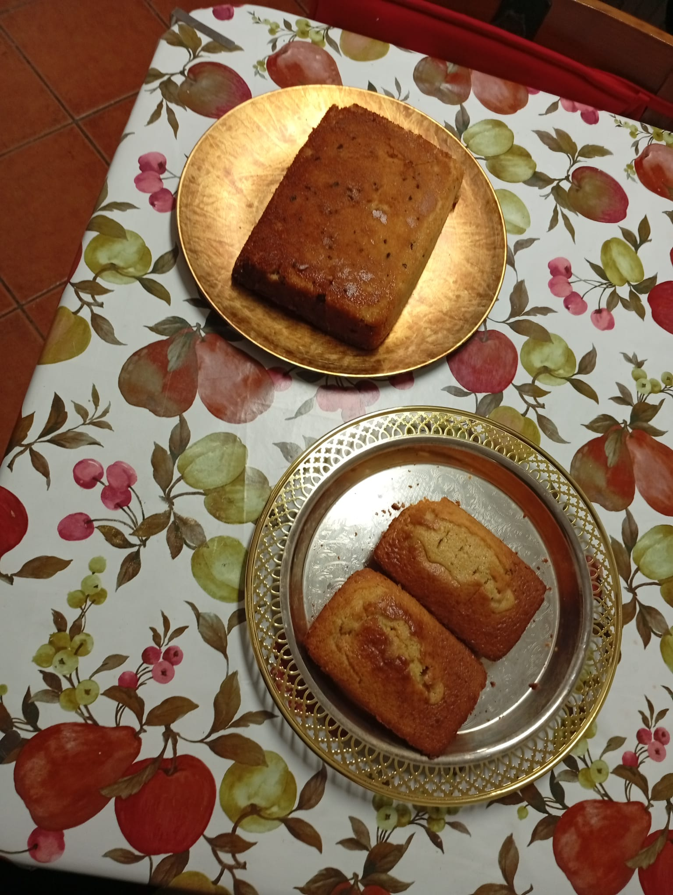
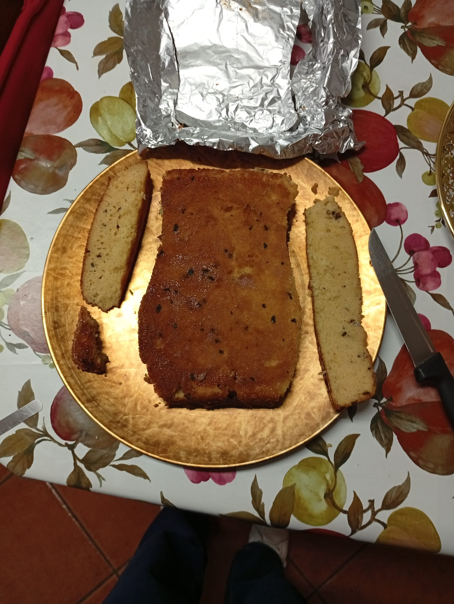
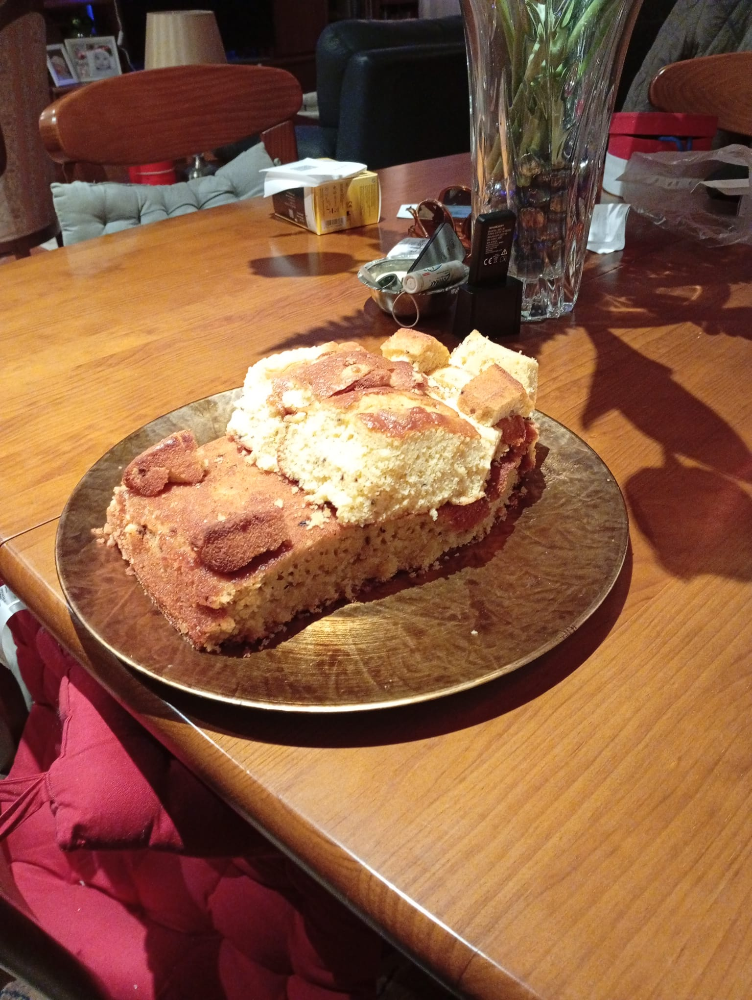
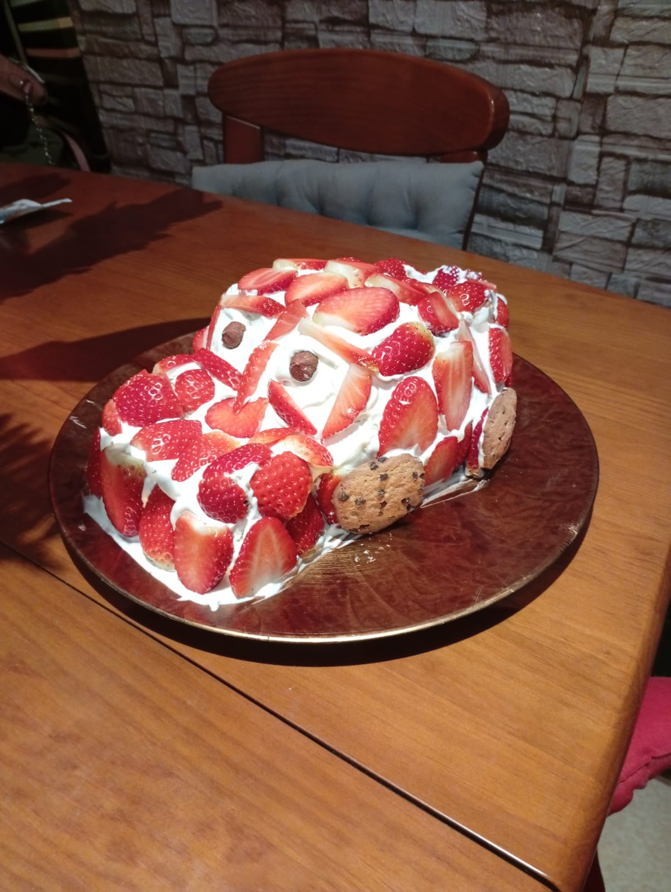
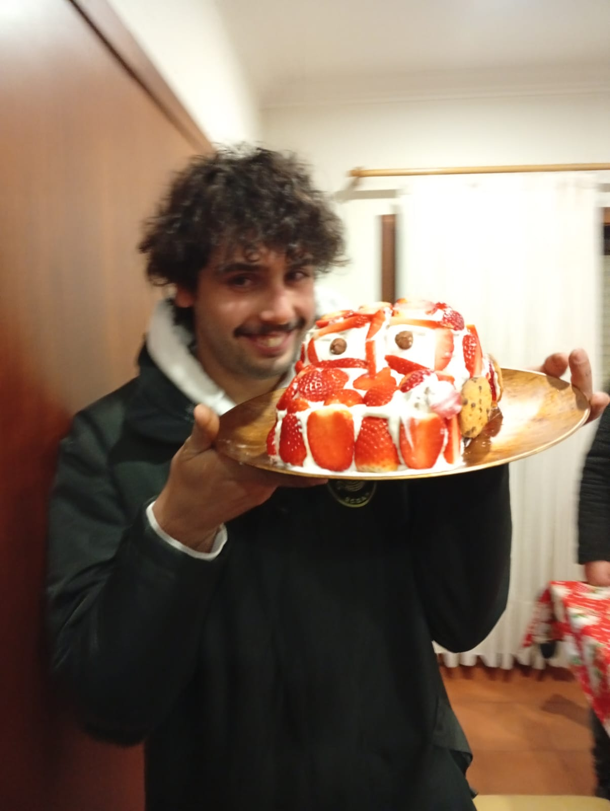

Bolo do Faísca McQueen
Tutorial passo a passo
Katchow!!

Passo 1

Encontrar receita de bolo do seu agrado, e fazer! Para seguir este método, precisamos de um bolo grande e dois bolos mais pequenos.
Passo 2


Desenformar os bolos, e cortar o grande segundo a forma da base do carro.
Passo 3

Utilizar um bolo dos pequenos e o necessário do segundo para a parte de cima do carro. Com o restante, fazer os restantes detalhes: faróis, alarão e detalhes na parte de trás. Se possível, utilizar morangos picados finamete e natas para colar os dois andares. Se achar conveniente, colocar palitos para garantir uma estrutura sólida.
Passo 4
Hora da Cobertura! Bater um pacote de natas e cortar morangos bem vermelhos às fatias.
Passo 5

Cobrir o bolo com as natas e dispor os morangos de maneira a cobrir a maior área possível.
Na zona dos olhos, não colocar morangos. Em vez disso, colocar uma avelã em cada olho.
Para fazer as rodas, utilizar as bolachas redondas mais escuras que tiver
Passo 6

Tchanaaaaaaa!!!! Aniversariante feliz :)